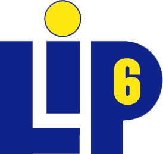

The VMKit project is retired
You can still play with the last VMKit release, but the project is not more maintained. Moreover, the information on these pages may be out of date.
If you are interested in restarting the project, please contact Gaël Thomas
VMKit: a substrate for virtual machines
Current MREs are monolithic. Extending them to propose new features or reusing them to execute new languages is difficult. VMKit is a library that eases the development of new MREs and the process of experimenting with new mechanisms inside MREs. VMKit provides the basic components of MREs: a JIT compiler, a GC, and a thread manager.
VMKit relies on LLVM for compilation and MMTk to manage memory. Currently, a full Java virtual machine called J3 is distributed with VMKit.
Features
For the end user, VMKit provides:
- Precise garbage collection.
- Just-in-Time and Ahead-of-Time compilation.
- Portable on many architectures (x86, x64, ppc32, ppc64, arm).
For the MRE developer, VMKit provides:
- Relatively small code base (~ 20k loc per VM)
- Infrastructure for virtual machine research and development
Current Status
VMKit currently has a decent implementation of a JVM called J3. It executes large projects (e.g. OSGi Felix, Tomcat, Eclipse) and the DaCapo benchmarks. A R virtual machine is currently under heavy development.
J3 has been tested on Linux/x64, Linux/x86, Linux/ppc32, MacOSX/x64, MacOSX/x86, MacOSX/ppc32. The JVM may work on ppc64. Support for Windows has not been investigated.
While this work aims to provide a fully functional JVM, it is still early work and is under heavy development. Some of the common missing pieces in vmkit/llvm are:
- Mixed interpretation/compilation.
- Adaptive optimization.
Why?
The development of VMKit was started out of a need to factorize virtual machine development. The JVM and CLI virtual machine have many similarities, but are too high-level to be the basis of a "universal" virtual machine. The LLVM IR on the opposite is low-level enough to be able to execute these VMs. VMKit is a proof of concept implementation towards that direction.
Paper on the design of VMKit:
The PhD thesis that initiated VMKit:
An introduction to VMKit can be found in the following video lectures:
- Presentation of VMKit/MMTk at the 2009 LLVM Developer's Meeting
- Presentation of VMKit at the 2008 LLVM Developer's Meeting
Current Status
VMKit currently has a decent implementation of a JVM. It executes large projects (e.g. OSGi Felix, Tomcat, Eclipse) and the DaCapo benchmarks.
The JVM has been tested on Linux/x64, Linux/x86, Linux/ppc32, MacOSX/x64, MacOSX/x86, MacOSX/ppc32. The JVM may work on ppc64. Support for Windows has not been investigated.
Get it and get involved!
Start by getting the code, building it, and playing with it. This will show you the sorts of things we can do today.
Once you've done that, please consider getting involved in the VMKit community. Currently, VMKit is tightly integrated into the LLVM community. You can sign up for the LLVM mailing list to ask and learn about how the project works.
VMKit2
The project VMKit2, sponsored by Inria and LIP6, a fork of VMKit project, that was recently integrated back into VMKit project.
|
|
 |